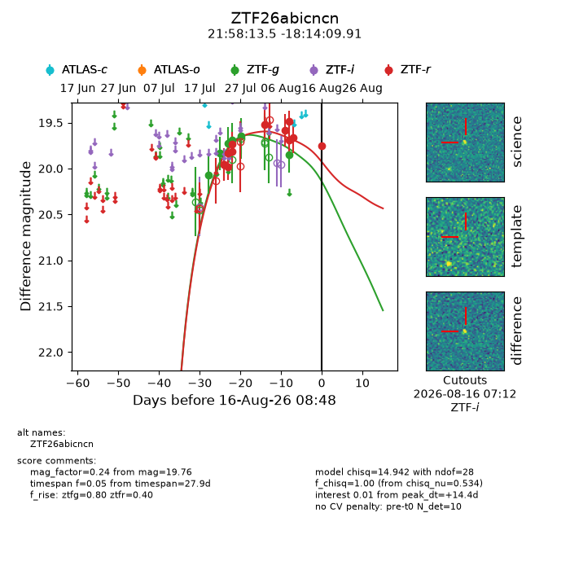
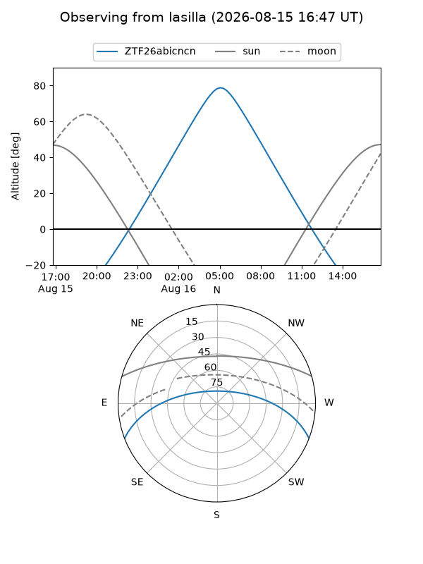
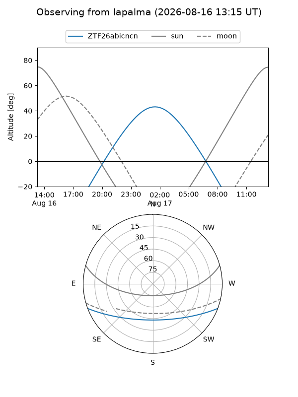
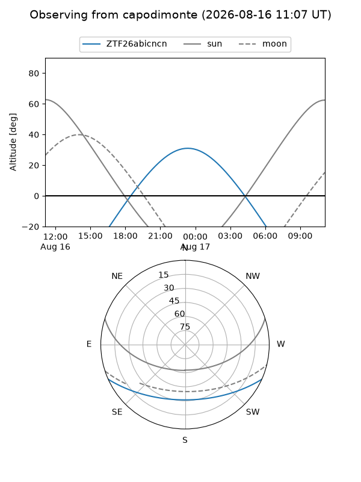
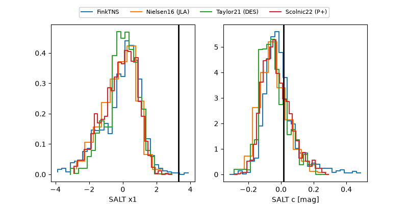

ZTF26abicncn
Target ZTF26abicncn at 2026-08-16 08:51
Aliases and brokers:
FINK-ZTF: ztf.fink-portal.org/ZTF26abicncn
Lasair-ZTF: lasair-ztf.lsst.ac.uk/objects/ZTF26abicncn
ALeRCE-ZTF: alerce.online/object/ZTF26abicncn
Direct TNS query: direct search
alt names
ZTF26abicncn (ztf,fink_ztf)
Coordinates:
equatorial (ra, dec) = 329.5564,-18.23609
equatorial (HMS+DMS) = 21:58:13.53,-18:14:09.91
galactic (l, b) = (36.1532,-49.27405)
Flags:
peak dt: +14.4
Photometry:
last ztfg=19.85, ztfr=19.76
6 ztfg, 11 ztfr detections
Lightcurve

Visibility



Additional plots
